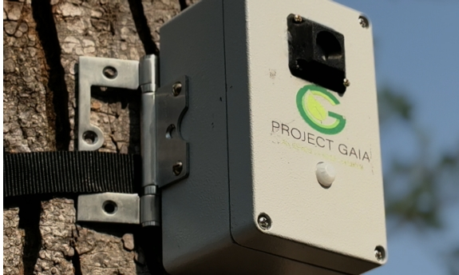

Official records from the Cauvery Wildlife Sanctuary, Anchetty R.F deployment and student research conducted at Sri Sai Ram Engineering College, Chennai.
The deployment comprised 3 interconnected nodes communicating over the LoRa protocol in the IN865 band, connected to a high-elevation central RAK Gateway. The installation validated long-range bi-directional transmission over an operational radius of nearly 8 kilometers despite severe mountainous obstacles and dense tree canopies.
| S.No | Node Name | Uptime / Operational Time | Node Type | GPS Coordinates | Status |
|---|---|---|---|---|---|
| 1 | CT 001 - Orion | 7 hrs 12 mins | Video, Image, Edge AI | 12°18'38.30"N, 77°46'36.29"E |
Active Captured |
| 2 | CT 002 – Sirius | 13 hrs 00 mins 47 secs | Video, Image, Edge AI | 12°18'38.70"N, 77°46'35.19"E |
Active Captured |
| 3 | Sensor Node 001 - Generic | 24 hrs (Turned off manually after retrieval) | Environmental Sensor Data | 12°18'38.70"N, 77°46'36.29"E |
24h Complete |
Objectives: To develop a multi-class fire and smoke classifier capable of executing on resource-constrained embedded systems, eliminating the need to transmit heavy video streams over low-bandwidth forest networks.
Dataset & 70:30 Split: Curated 4 balanced classes: (1) Fire only, (2) Smoke only, (3) Fire & smoke, (4) Normal condition. Divided 70% for training to maximize feature learning and 30% for strict evaluation to prevent overfitting.
Deployment Pipeline: Trained in PyTorch over 120 epochs achieving 80.69% accuracy. Converted best.pt into optimized Sony IMX binary format for on-sensor execution on the Raspberry Pi Zero 2 W with Sony IMX AI Camera.
Engineered a distributed sensor network based on WisBlock modular architecture to operate under ultra-low-power constraints with coordinated data acquisition:
Configured a 6V 6Ah Lithium Iron Phosphate battery pack using 32650 cells. Chosen for flat voltage discharge (7.2V to 5.5V), exceptional thermal safety in high forest temperatures, and 2000+ cycle life.
MP1584 DC-DC 3A Buck Converter: Steps down 5.5–7.2V battery input to regulated 5.0–5.1V with 90–95% efficiency. Coupled with a 1.5A slow-blow fuse to absorb Pi boot inrush without tripping while shielding against short circuits.
Employs Saft 3.6V 2.6Ah Lithium Thionyl Chloride non-rechargeable chemistry for WisBlock boards. Provides extreme low self-discharge for multi-year unattended runtime.
XL4015 Buck Converter: Regulates output to 3.9–4.3V with 5A safety headroom, built-in current limit, and ripple suppression.
Actual LoRa packet logs recorded during the 11–12 April 2026 field trial.
| Timestamp | Node ID | GPS Coordinates | RSSI (dBm) | SNR (dB) | Payload Event / Status | Action |
|---|---|---|---|---|---|---|
2026-04-11 10:42:00 |
CT 001 - Orion | 12°18'38.30"N, 77°46'36.29"E |
-65 dBm | 13.2 dB | Node Boot / Setup Beacon Received | |
2026-04-11 11:31:15 |
CT 001 - Orion | 12°18'38.32"N, 77°46'36.27"E |
-68 dBm | 12.5 dB | Trigger sent, image & video capture (Test 01) | |
2026-04-11 11:32:40 |
CT 001 - Orion | 12°18'38.31"N, 77°46'36.28"E |
-70 dBm | 11.8 dB | Trigger sent, image & video capture (Test 02) | |
2026-04-11 11:34:12 |
CT 001 - Orion | 12°18'38.29"N, 77°46'36.31"E |
-72 dBm | 10.5 dB | Trigger sent, image & video capture (Test 03) | |
2026-04-11 11:35:55 |
CT 001 - Orion | 12°18'38.29"N, 77°46'36.30"E |
-71 dBm | 11.0 dB | Trigger sent, image & video capture (Test 04) | |
2026-04-11 11:40:18 |
CT 001 - Orion | 12°18'38.33"N, 77°46'36.26"E |
-74 dBm | 9.8 dB | Trigger sent, image & video capture (Test 06) | |
2026-04-11 11:46:11 |
CT 001 - Orion | 12°18'38.29"N, 77°46'36.32"E |
-78 dBm | 7.2 dB | Trigger sent, image & video capture (Test 08) | |
2026-04-11 11:57:40 |
CT 001 - Orion | 12°18'38.31"N, 77°46'36.30"E |
-80 dBm | 6.2 dB | Trigger sent, image & video capture (Test 11) | |
2026-04-11 14:57:40 |
CT 001 - Orion | 12°18'38.28"N, 77°46'36.30"E |
-82 dBm | 5.5 dB | Hourly Status Check / Keep-Alive Packet | |
2026-04-11 18:42:00 |
CT 001 - Orion | 12°18'38.32"N, 77°46'36.27"E |
-86 dBm | 4.5 dB | Final Status Check / Interval Shutdown Beacon | |
2026-04-11 11:23:31 |
CT 002 – Sirius | 12°18'38.70"N, 77°46'35.19"E |
-52 dBm | 10.2 dB | Node Boot / Setup Beacon Received | |
2026-04-11 11:34:45 |
CT 002 – Sirius | 12°18'38.71"N, 77°46'35.18"E |
-60 dBm | 9.0 dB | Trigger sent, image & video capture (Test 03) | |
2026-04-11 11:45:30 |
CT 002 – Sirius | 12°18'38.69"N, 77°46'35.18"E |
-72 dBm | 7.0 dB | Trigger sent, image & video capture (Test 08) | |
2026-04-11 14:56:15 |
CT 002 – Sirius | 12°18'38.68"N, 77°46'35.17"E |
-98 dBm | 3.5 dB | Hourly Status Check (Dynamic terrain shifting) | |
2026-04-11 20:56:15 |
CT 002 – Sirius | 12°18'38.71"N, 77°46'35.21"E |
-111 dBm | -11.8 dB | Hourly Status Check (Negative SNR foliage fade) | |
2026-04-12 00:30:47 |
CT 002 – Sirius | 12°18'38.71"N, 77°46'35.21"E |
-110 dBm | -18.5 dB | Final Status Check / Interval Shutdown (13h Uptime) | |
2026-04-11 10:41:42 |
Sensor Node 001 | 12°18'38.70"N, 77°46'36.29"E |
-92 dBm | 6.2 dB | Temp: 26.2°C | Hum: 37% | Gas: 1987 kΩ | Batt: 4.15V | |
2026-04-11 13:30:00 |
Sensor Node 001 | 12°18'38.70"N, 77°46'36.29"E |
-106 dBm | -2.5 dB | Temp: 34.5°C | Hum: 28% | Gas: 1812 kΩ | Batt: 4.02V | |
2026-04-11 23:30:00 |
Sensor Node 001 | 12°18'38.70"N, 77°46'36.29"E |
-115 dBm | -15.0 dB | Temp: 23.8°C | Hum: 55% | Gas: 1812 kΩ | Batt: 3.92V | |
2026-04-12 10:40:00 |
Sensor Node 001 | 12°18'38.70"N, 77°46'36.29"E |
-109 dBm | -14.5 dB | 24h Complete • Turned off manually after physical retrieval |
Honest and rigorous engineering analysis from real-world forest deployment:
During the visit, the team completed full 3D point-cloud LiDAR and photogrammetry scans of the Anchetty deployment site. Instead of relying on human intuition to strap camera traps to trees, GAIA uses a 3D virtual simulation of tree trunks, ground slope, and foliage density to calculate the exact optimal mounting height and angle vectors for specific wildlife species (e.g., leopards vs elephants vs poachers).
